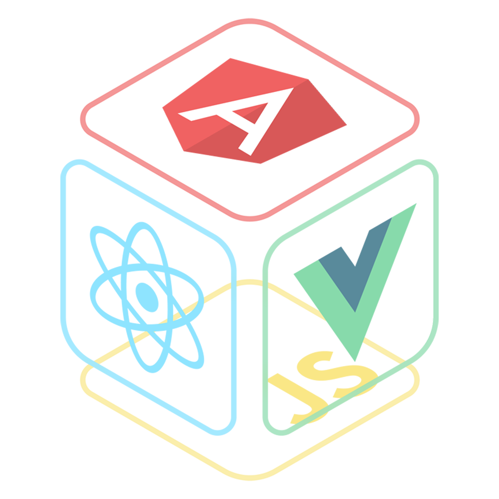

+

+

+
Juan Jesús López Fernández
Desarrollador Web - Astronauta de corazón - Adicto a la curiosidad
Conocimientos
Sobre mí
Soy un desarrollador web criado en las raíces de internet y espoleado por los cursos online. Me he centrado en aprender todo lo necesario para poder desempeñar cualquier tarea del frontend, aunque no descuido "lodeatrás". Adicto al conocimiento, al brócoli y al esfuerzo. Amante del aprendizaje. Azote del estrés. Destructor de problemas. ¿Una canción, dices? Space Oddity. ¡Saludos, Major Tom! Pronto bailaremos entre polvo de estrellas.
¿Nos echamos unos parlamentos?